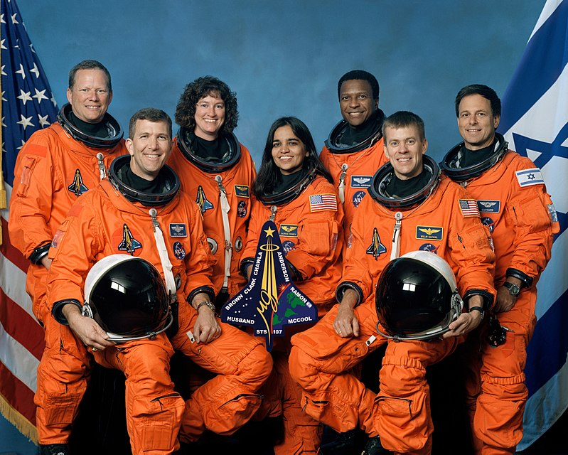

KALPANA CHAWLA
March 17, 1962 – February 1, 2003
Birth Place
Karnal East, Punjab, India
Karnal East, Punjab, India
| Specialization | Institute | Year |
|---|---|---|
| schooling | Tagore school | 1976 |
| B.E in Aeronautical Enginneering | Punjab Enginneering College | 1982 |
| Master in Aerospace Enginneering | University of Texas, Arlington. | 1984 |
| Second Masters | University of Colorado Boulder | 1986 |
| Ph.D in Aerospace Enginneering | University of Colorado Boulder | 1986 |
In 1988, she began working at NASA Ames Research Center, where she did computational fluid dynamics (CFD) research on vertical and/or short take-off and landing (V/STOL) concepts. Much of Chawla's research is included in technical journals and conference papers. In 1993, she joined Overset Methods, Inc. as Vice President and Research Scientist specializing in simulation of moving multiple body problems. Chawla held a Certificated Flight Instructor rating for airplanes, gliders and Commercial Pilot licenses for single and multi-engine airplanes, seaplanes and gliders. After becoming a naturalized U.S. citizen in April 1991, Chawla applied for the NASA Astronaut Corps. She joined the corps in March 1995 and was selected for her first flight in 1996.
Her first space mission began on November 19, 1997, as part of the six-astronaut crew that flew the Space Shuttle Columbia flight STS-87
In 2001, Chawla was selected for her second flight as part of the crew of STS-107. This mission was repeatedly delayed due to scheduling conflicts and technical.
During the launch of STS-107, Columbia's 28th mission, a piece of foam insulation broke off from the Space Shuttle external tank and struck the left wing of the orbiter. Previous shuttle launches had seen minor damage from foam shedding, but some engineers suspected that the damage to Columbia was more serious. NASA managers limited the investigation, reasoning that the crew could not have fixed the problem if it had been confirmed. When Columbia re-entered the atmosphere of Earth, the damage allowed hot atmospheric gases to penetrate and destroy the internal wing structure, which caused the spacecraft to become unstable and break apart. Chawla died on February 1, 2003, in the Space Shuttle Columbia disaster, along with the other six crew members.
